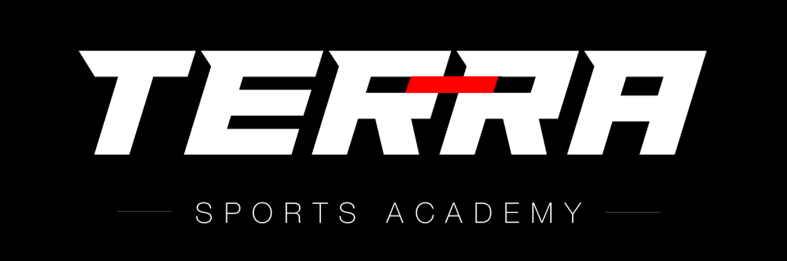

Instagram
WhatsApp
WhatsApp Community
Leave us a review
Call Us
Playspots
Football and Cricket Ground
Puzhakkal, Thrissur
Since you're here, please leave a review. 👇

WhatsApp Community
Leave us a review
Call Us
Playspots